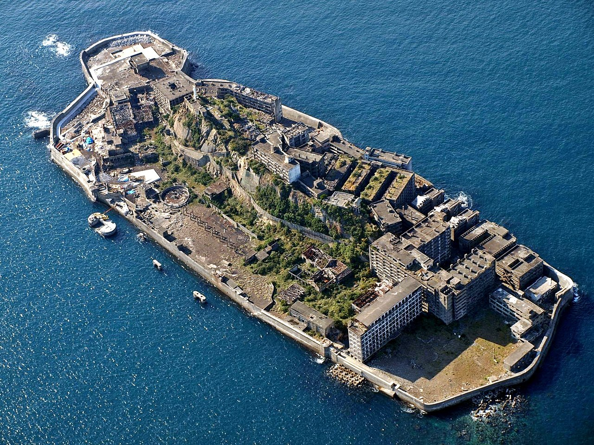
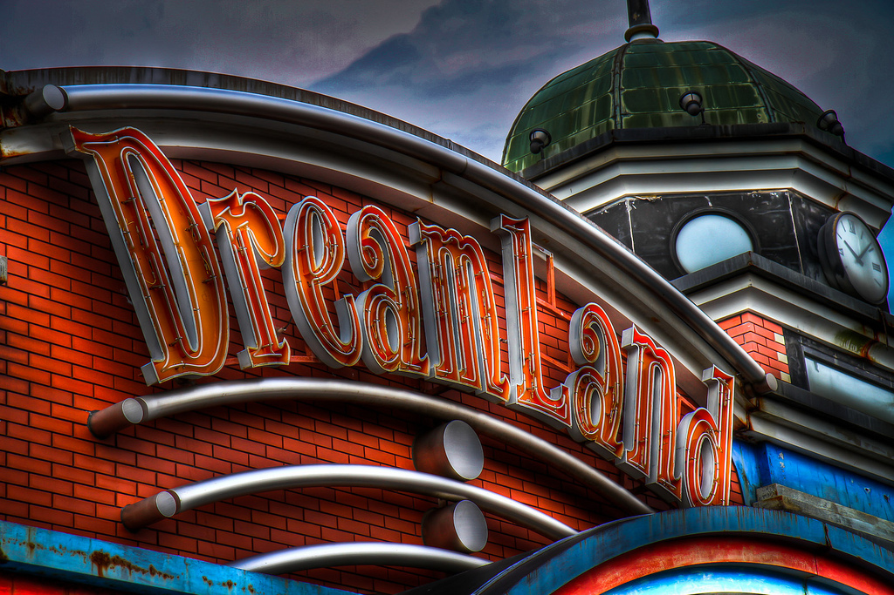

Abandoned
Urban ruins reclaimed by nature. Japan's haikyo culture runs deep.

Hashima Island (Gunkanjima)
A concrete ghost island that once held the highest population density on Earth — 5,259 people crammed onto 6.3 hectares in 1959. Built for undersea coal mining, it had apartment blocks, a school, hospital, cinema, and even a rooftop garden. All on a rock in the sea.
When the coal ran out in 1974, everyone left. The entire island was abandoned overnight. Now its brutalist concrete buildings crumble into the Pacific, untouched for decades. You might recognize it as the villain's lair in the James Bond film Skyfall.
UNESCO World Heritage Site. Boat tours depart from Nagasaki Port (~¥4,000-5,000). You can walk a designated path on the island. Tours cancel in rough weather. Book in advance — they sell out.

Nara Dreamland
A Disneyland knockoff that opened in 1961 after a Japanese businessman visited the original Anaheim park and wanted to build his own. Complete with a Sleeping Beauty Castle replica, six roller coasters, and its own Main Street.
When the real Tokyo Disneyland opened in 1983, attendance collapsed. It limped along until 2006, then was abandoned entirely — left to rot with rides still standing, mascot statues gathering moss. It became the holy grail of urban explorers before demolition in 2016-2017.
⚠️ Demolished. The park was torn down in 2016-2017. The site is now cleared. This entry is here for history — it was one of the most photographed abandoned places in Japan. The photos and videos that remain online are haunting.

Nichitsu Ghost Town
Deep in the mountains of Saitama, an entire mining town sits abandoned. Houses, a hospital, a school — all frozen in time since the mine closed. Textbooks still sit on desks. Personal belongings litter the floors.
What makes Nichitsu unique is its accessibility from Tokyo and the sheer completeness of what was left behind. It's like the residents just... walked out one day and never came back. The surrounding mountain scenery adds to the otherworldly feeling.
The area is technically private property — enter at your own risk and be respectful. Accessible by car via mountain roads from Chichibu. The drive itself through the gorge is spectacular. Some buildings are structurally unsound.